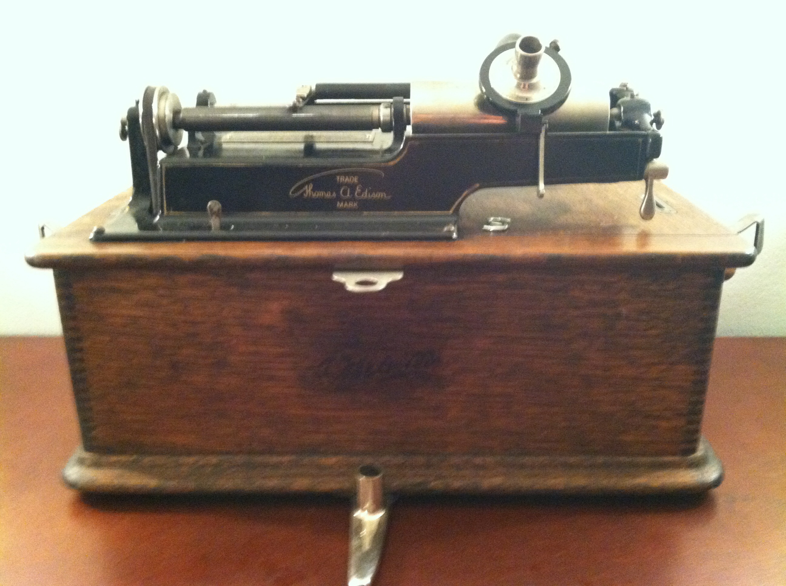
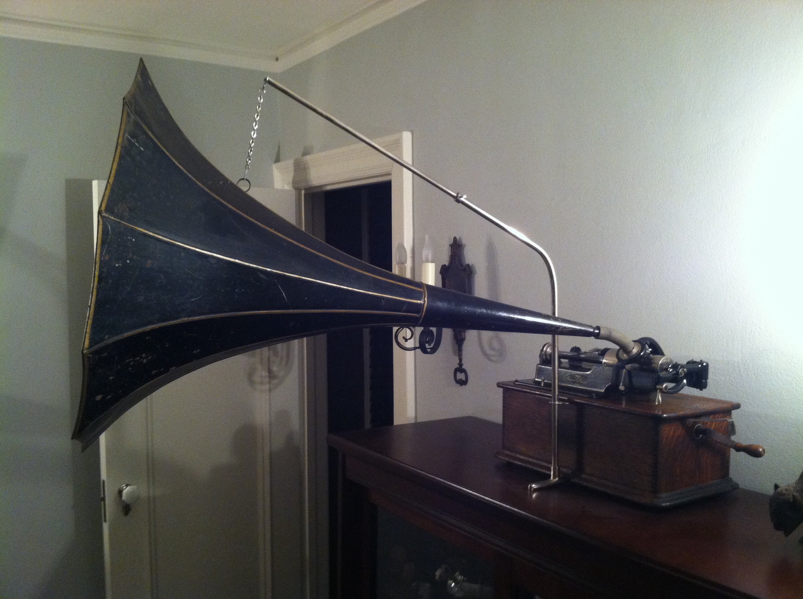

Note: You can see these images enlarged below by either clicking or hovering on said image.
The first phonograph in my collection was this Victor Victrola, Model VV-IX. This model was produced between 1911 and 1924. Earlier models did not have feet carved into the cabinet so that would place this particular example after about 1915. This was the first phonograph I restored from top to bottom and was purchased on eBay. When I first received the VV-IX it was in pretty rough shape. Veneer was missing from the lid, the finish on the cabinet was quite scratched up and was so dark it was difficult to see the quartersawn oak wood grain. Part of the small feet on the cabinet had also been broken off. The motor was in decent shape but needed a good cleaning and re-greasing. I completely stripped the cabinet and replaced the missing veneer on the lid, and built up several layers of wood filler to try to repair the missing parts of the cabinet feet. The cabinet was stained a cherry finish to give the wood more of a red oak tone and finished in high gloss. A local woodworking shop introduced me to a product called Rottenstone which when applied to the final coat of finish buffs to a nice shine. The motor was completely disassembled, cleaned and reassembled with new grease. During this process, I learned the value of making a diagram of the motor BEFORE disassembling it! After reinstalling the mainspring backwards, I eventually figured out how to put the motor back together properly. Now this VV-IX looks and plays as well as it did in the 1910's! The next phonograph I added to my collection was an Edison Standard Model A phonograph from about 1903. The earlier Model A versions of the Standard had a plain, square case with suitcase type clips to hold the lid in place. After 1901, the Standard case was redesigned and resembled a sewing machine case with the Edison "Banner" decal on the front of the case. As this was my first experience with a cylinder phonograph, there was a lot to learn about them and this machine was a good introduction for me. I had purchased a few Edison Blue Amberol cylinders to play on the phonograph. The Amberols came out in 1908 and played for 4 minutes versus the old wax cylinders that only played for 2 minutes. However, the 4 minute records need to be played with an appropriate reproducer and at first I did not realize the difference between all of the different Edison reproducers out there. Luckily, this particular phonograph had an upgrade so that it could play both the 2 and 4 minute records. This is noted by the raised gear cover on the left side of the machine. I received the phonograph with an Edison Model C reproducer which only plays 2 minute wax records. I tried to play one of the 4 minute records with the Model C and soon discovered why a different reproducer was needed - I could hear the music but it was quiet and distorted! The grooves in the 2 minute records are wider than the 4 minute ones, and the Model C stylus is wider to fit the 2 minute records. I soon found a Model H 4 minute reproducer so that I could play both kinds of records. I also learned that there were "Combination" model reproducers, such as the Model K, which could play both types of record using one reproducer. My Edison Standard was in pretty decent shape when I received it so I did not do much in the way of restoration on this model. I lubricated the gears and cleaned the cabinet a bit, but the original finish and banner decal were in too nice of shape to refinish the cabinet. This upright Victrola, Model VV-110, is a prominent part of our living room.The star of my collection is this Columbia BII from about 1905. This is the result of many years of collecting hard to find parts for this machine. I had the horn and hardware re-nickeled and it really makes this phonograph stand out.This is an Edison Home Model B phonograph with 2-4 minute conversion project I found at the phonograph show in Union, IL. As you can see, the bedplate and hardware on top were in pretty rough shape and the machine was not functioning. (Before picture)

Here is the Home Model B after restoration. I left the original finish on the case as it was still very decent but repainted the bedplate and upper hardware. After installing a new feedscrew, this Edison Home was up and running again!
